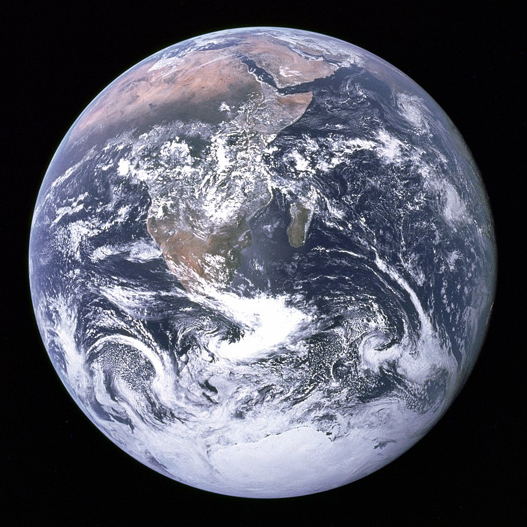

벽에 수직 부착 · 측정용 · 길안내에 사용하지 마세요

이미지 자체의 가로 길이 = 18.0 cm · 흰 여백·제목 제외
검산선 10.0 cm — 반드시 줄자로 확인
A4 세로 / 배율 100% / 페이지 맞춤 끄기 / 머리글·바닥글 끄기.
무광 인쇄 후 평평한 판에 붙이세요. 이미지 위에 글씨나 표시를 추가하지 마세요.
마커 중심의 바닥 기준 높이: ______ m · 벽에서 화살표 중심까지: ______ m
기준 이미지: Google ARCore SDK default.jpg. 출처·라이선스는 ThirdParty/를 확인하세요.